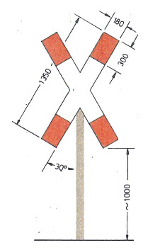
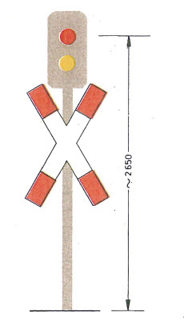

EBO
Ausfertigungsdatum: 08.05.1967
Vollzitat:
"Eisenbahn-Bau- und Betriebsordnung vom 8. Mai 1967 (BGBl. 1967 II S. 1563), die zuletzt durch Artikel 2 der Verordnung vom 5. April 2019 (BGBl. I S. 479) geändert worden ist"
| Stand: | Zuletzt geändert durch Art. 2 V v. 5.4.2019 I 479 |
(+++ Textnachweis ab: 1.1.1982 +++)Überschrift: V gilt auch in Berlin gem. V 930-1-2 v. 15.11.1984 I 1369
(+++ Maßgaben aufgrund des EinigVtr vgl. EBO Anhang EV +++)
| Erster Abschnitt | |
| Allgemeines | |
| Geltungsbereich | § 1 |
| Allgemeine Anforderungen | § 2 |
| Ausnahmen, Genehmigungen | § 3 |
| Grenzbetriebsstrecken und Durchgangsstrecken | § 3a |
| Zweiter Abschnitt | |
| Bahnanlagen | |
| Begriffserklärungen | § 4 |
| Spurweite | § 5 |
| Gleisbogen | § 6 |
| Gleisneigung | § 7 |
| Belastbarkeit des Oberbaus und der Bauwerke | § 8 |
| Regellichtraum | § 9 |
| Gleisabstand | § 10 |
| Bahnübergänge | § 11 |
| Höhengleiche Kreuzungen von Schienenbahnen | § 12 |
| Bahnsteige, Rampen | § 13 |
| Signale und Weichen | § 14 |
| Streckenblock, Zugbeeinflussung | § 15 |
| Fernmeldeanlagen | § 16 |
| Untersuchen und Überwachen der Bahnanlagen | § 17 |
| Dritter Abschnitt | |
| Fahrzeuge | |
| Einteilung, Begriffserklärungen | § 18 |
| Radsatzlasten und Fahrzeuggewichte je Längeneinheit | § 19 |
| Radsatzabstand und Bogenlauf | § 20 |
| Räder und Radsätze | § 21 |
| Begrenzung der Fahrzeuge | § 22 |
| Bremsen | § 23 |
| Zug- und Stoßeinrichtungen | § 24 |
| Freie Räume und Bauteile an den Fahrzeugenden | § 25 |
| (weggefallen) | § 26 |
| (weggefallen) | § 27 |
| Ausrüstung und Anschriften | § 28 |
| (weggefallen) | §§ 29 bis 31 |
| Abnahme und Untersuchung der Fahrzeuge | § 32 |
| Überwachungsbedürftige Anlagen der Fahrzeuge | § 33 |
| Vierter Abschnitt | |
| Bahnbetrieb | |
| Begriff, Art und Länge der Züge | § 34 |
| Bremsen der Züge | § 35 |
| Zusammenstellen der Züge | § 36 |
| Ausrüsten der Züge mit Mitteln zur ersten Hilfeleistung | § 37 |
| Fahrordnung | § 38 |
| Zugfolge | § 39 |
| Fahrgeschwindigkeit | § 40 |
| (weggefallen) | § 41 |
| Rangieren, Hemmschuhe | § 42 |
| Sichern stillstehender Fahrzeuge | § 43 |
| (weggefallen) | § 44 |
| Besetzen der Triebfahrzeuge und Züge | § 45 |
| (weggefallen) | § 46 |
| Fünfter Abschnitt | |
| Personal | |
| Betriebsbeamte | § 47 |
| Anforderungen an Betriebsbeamte | § 48 |
| (weggefallen) | §§ 49 bis 53 |
| Ausbildung, Prüfung | § 54 |
| Sechster Abschnitt | |
| Sicherheit und Ordnung auf dem Gebiet der Bahnanlagen | |
| (weggefallen) | §§ 55 bis 61 |
| Betreten und Benutzen der Bahnanlagen und Fahrzeuge | § 62 |
| Verhalten auf dem Gebiet der Bahnanlagen | § 63 |
| Beschädigen der Bahn und betriebsstörende Handlungen | § 64 |
| Eisenbahnbedienstete | § 64a |
| Ordnungswidrigkeiten | § 64b |
| Siebter Abschnitt | |
| Schlußbestimmungen | |
| Übergangsregelung | § 65 |
| Inkrafttreten | § 66 |
| Anlagen | |
| 1 | Regellichtraum |
| 2 | Ermittlung der Grenzlinie |
| 3 | Ermittlung der Grenzlinie bei Oberleitung |
| 4 | Gleisabstand |
| 5 | - |
| 6 | Räder und Radsätze |
| 7 | Bezugslinie G1 |
| 8 | Bezugslinie G2 |
| 9 | Einschränkung der Fahrzeugmaße |
| 10 | Zug- und Stoßeinrichtungen |
| 11 | Freizuhaltende Räume an den Fahrzeugenden |
| die auf der linken Hälfte einer Seite nur für Hauptbahnen. | die auf der rechten Hälfte einer Seite nur für Nebenbahnen. |
| 1.465 mm in Hauptgleisen, | 1.470 mm; |
| 1.470 mm in Nebengleisen; |
| Bogenradien | Spurweite |
|---|---|
| m | mm |
| unter 175 bis 150 | 1.435 |
| unter 150 bis 125 | 1.440 |
| unter 125 bis 100 | 1.445 |
| 300 m | 180 m |
| 1:400. | 1:300. |
| 12,5v.T. | 40v.T. |
| mit einer Radsatzlast von 18 t und einem Fahrzeuggewicht je Längeneinheit von 5,6t/m. | mit einer Radsatzlast von 16 t und einem Fahrzeuggewicht je Längeneinheit von 4,5 t/m. Ausnahmen von diesen Mindestwerten sind zulässig (§ 3 Abs. 1 Nr. 2). |
| mindestens 20 t | möglichst 18 t |
| (2) Auf Strecken mit einer zugelassenen Geschwindigkeit von mehr als 160 km/h sind Bahnübergänge unzulässig. |
(7) Bahnübergänge dürfen gesichert werden
| |
| (8) Bahnübergänge über Nebengleise dürfen wie Bahnübergänge über Nebenbahnen (Absatz 7) gesichert werden. |
| müssen | dürfen |
ohne öffentlichen Verkehr, die als solche gekennzeichnet sind, dürfen gesichert werden bei einer Geschwindigkeit der Eisenbahnfahrzeuge am Bahnübergang von höchstens 140 km/h
|
|
| (3) Auf Bahnsteigen an Gleisen, die mit einer Geschwindigkeit von mehr als 160 km/h befahren werden, sind die bei Durchfahrten freizuhaltenden Flächen zu kennzeichnen; bei mehr als 200 km/h sind Vorkehrungen zu treffen, daß sich keine Reisenden im Gefahrenbereich auf den Bahnsteigen aufhalten. |
| Bei Gleisen, die mit einer Geschwindigkeit von mehr als 160 km/h befahren werden, sind Übergänge unzulässig. |
| bei einer Einfahrgeschwindigkeit von mehr als 50 km/h |
| bei einer Ausfahrtgeschwindigkeit von mehr als 60 km/h |
| sind. | sind, | |
| 3. für Einfahrsignale bei Zugleitbetrieb. | ||
| zu sichern. | zu sichern, wenn dort mit mehr als 60 km/h - beim Befahren von Weichen gegen die Spitze mit mehr als 50 km/h - gefahren wird. Ausnahmen sind zulässig (§ 3 Abs. 1 Nr.2). |
| Weichen | Weichen, die mit mehr als 50 km/h gegen die Spitze befahren werden, |
| mit mehr als 50 km/h |
| beeinträchtigt, | beeinträchtigt, oder werden nichtsignalabhängige Weichen, ausgenommen Rückfallweichen, von Reisezügen mit mehr als 40 km/h bis höchstens 50 km/h gegen die Spitze befahren, |
| Reisezüge | Reisezüge, die mit mehr als 50 km/h fahren, |
| sind Flankenschutzvorkehrungen zu treffen. | |
| Der Flankenschutz für Gleise, die mit mehr als 160 km/h befahren werden, muß in Bahnhöfen und auf Anschlußstellen durch Schutzweichen gewährleistet sein. |
| zu verbinden. | zu verbinden, wenn im Bremswegabstand vor dem Hauptsignal mit mehr als 60 km/h gefahren wird. Ist hiernach kein Vorsignal erforderlich, so muß der Bremswegabstand durch eine Signaltafel gekennzeichnet werden. |
| anzukündigen. | anzukündigen, wenn vom Vorsignal ab mit mehr als 60 km/h gefahren wird. |
| sind. | sind oder im allgemeinen nicht verschlossen gehalten werden. Bei ausreichender Beleuchtung sind Weichensignale nicht erforderlich. |
| (1) Auf Bahnen mit besonders dichter Zugfolge muß das Signal für die Fahrt in eine Blockstrecke unter Verschluß der nächsten Blockstelle liegen. | |
| (2) Strecken | mit Signalen, die nach § 14 vorgeschrieben sind und auf denen mehr als 80 km/h zugelassen sind, |
| müssen mit Zugbeeinflussung ausgerüstet sein, durch die ein Zug selbsttätig zum Halten gebracht und ein unzulässiges Anfahren gegen Halt zeigende Signale überwacht werden kann. | |
Strecken mit Signalen, die nach § 14 vorgeschrieben sind, auf denen
| |
| (3) Strecken, auf denen mehr als 160 km/h zugelassen sind, müssen mit Zugbeeinflussung ausgerüstet sein, durch die ein Zug selbsttätig zum Halten gebracht und außerdem geführt werden kann. | |
| (1) Zugfolgestellen | |
| und Zuglaufmeldestellen | |
| sind durch Fernmeldeanlagen zu verbinden. Schrankenposten und Streckenfernsprecher sind in die Verbindung einzuschalten. | |
| Ausnahmen sind zulässig (§ 3 Abs. 1 Nr. 2). | |
| (2) Auf Strecken ohne Streckenblockeinrichtung, | |
| die von Reisezügen oder von Zügen mit mehr als 60 km/h befahren werden, | |
| sind fernmündliche Zugmeldungen durch Sprachspeicher aufzuzeichnen. Ausnahmen sind zulässig (§ 3 Abs. 1 Nr. 2). | |
| (3) Streckenfernsprecher sind auf freier Strecke einzubauen, soweit es erforderlich ist. | |
| (4) Strecken, die von Reisezügen befahren werden, sollen mit Zugfunkeinrichtungen ausgerüstet sein. Mit Zugfunkeinrichtungen müssen ausgerüstet sein | |
| |
| |
| (5) Bahnsteige an Gleisen, die mit mehr als 160 km/h befahren werden, sollen mit Lautsprecheranlagen ausgerüstet sein. | |
bis zu 18 t I bis zu 16 tzulässig. Höhere Radsatzlasten und Fahrzeuggewichte je Längeneinheit sind zulässig, wenn sie vom Oberbau und von den Bauwerken sicher aufgenommen werden können. Bei Radsatzabständen unter 1.500 mm sind die zulässigen Radsatzlasten und Fahrzeuggewichte je Längeneinheit entsprechend der Belastbarkeit des Oberbaus und der Bauwerke einzuschränken.
und Fahrzeuggewichte je Längeneinheit
bis zu 5,6 t/m I bis zu 4,5 t/m
1 000 m. I 700 m.Für bestimmte Strecken können die in Absatz 3 genannten Behörden auch Bremswege zulassen, die über 1 000 m oder 700 m hinausgehen. Für Züge, die mit Zugbeeinflussung gemäß § 15 Abs. 3 geführt werden, gelten besondere Bremswege.
| (2) | Bei Zugleitbetrieb wird der Zuglauf über Zuglaufmeldestellen geregelt. Für den Zuglauf ist der Zugleiter verantwortlich. |
| ferner beim Fahren im Sichtabstand und bei Zugleitbetrieb, wenn die Sicherheit durch betriebliche Anweisungen oder durch technische Einrichtungen gewährleistet ist. |
| Bei Zugleitbetrieb darf dem Zugführer die Fahrwegprüfung für den nächsten Zug - ohne Meldung an den Zugleiter - übertragen werden. |
| bei Zugleitbetrieb mit Zustimmung des Zugleiters, |
| 250 km/h, wenn Strecke und führende Fahrzeuge mit Zugbeeinflussung (§ 15 Absatz 3, § 28 Absatz 1 Nummer 5) ausgerüstet sind und diese wirksam ist, oder 160 km/h, wenn Strecke und führende Fahrzeuge mit Zugbeeinflussung (§ 15 Absatz 2 Satz 1, § 28 Absatz 1 Nummer 4) ausgerüstet sind und diese wirksam ist, sonst 50 km/h; | 100 km/h, wenn die in den §§ 5, 6, 11, 15 Absatz 1, § 16 Absatz 1 und § 35 Absatz 4 genannten, für Hauptbahnen geltenden Vorschriften eingehalten sind, sonst 80 km/h; abweichend davon beträgt die zulässige Geschwindigkeit 50 km/h, wenn die Zugbeeinflussung der Strecke oder des führenden Fahrzeuges vorübergehend nicht wirksam ist oder bei Zugleitbetrieb die Sicherheit durch technische Einrichtungen vorübergehend nicht gewährleistet ist; |
| 120 km/h, wenn Strecke und führende Fahrzeuge mit Zugbeeinflussung (§ 15 Absatz 2 Satz 1, § 28 Absatz 1 Nummer 4) ausgerüstet sind und diese wirksam ist, sonst 50 km/h; | 80 km/h; abweichend davon beträgt die zulässige Geschwindigkeit 50 km/h, wenn die Zugbeeinflussung der Strecke oder des führenden Fahrzeuges vorübergehend nicht wirksam ist oder bei Zugleitbetrieb die Sicherheit durch technische Einrichtungen vorübergehend nicht gewährleistet ist; |
| über Bahnübergänge ohne technische Sicherung (vgl. § 11 Abs. 3) höchstens 20 km/h. |
| Auf Bahnhöfen ohne Einfahrsignale ist das Rangieren über die Einfahrweiche oder die Trapeztafel hinaus gestattet, wenn die Sicherheit durch betriebliche Anweisungen gewährleistet ist. |
| Die Maße beziehen sich auf die Verbindungslinie der Schienen- oberkanten (SO) in Sollage; die Mittellinie steht senkrecht auf der Verbindungslinie. | Unterer Teil der Grenzlinie siehe Bild 2 |
| große Grenzlinie | kleine Grenzlinie | |||||
| Radius (r) | 250 | m | ₒₒ | |||
| Überhöhung (u) | 160 | mm | 50 | mm | ||
| Überhöhungsfehlbetrag (uf) | 150 | mm | 50 | mm | ||
| Spurbreite (l) | 1470 | mm | 1445 | mm | ||
| Ausrundungsradius bei Neigungswechsel (ra) | 2000 | m | 2000 | m | ||
| Hebungsreserve | 50 | mm | 50 | mm | ||
| Schienenabnutzung | 10 | mm | 10 | mm | ||
| Bei Gleisen mit Oberleitung zusätzlich: | ||||||
| Arbeitshöhe der Stromabnehmer | 5600 | mm | 5600 | mm | ||
| Mindestabstand von der Oberleitung (15 kV Wechselstrom) | 150 | mm | 150 | mm | ||
| Stromart | Nenn- spannung | Mindest- höhe | Halbe Mindestbreite b im Arbeitshöhenbereich des Stromabnehmers über SO | Abschrägung der Ecken | ||||
| a | ≤ 5300 | über 5300 bis 5500 | über 5500 bis 5900 | über 5900 bis 6500 | c | d | ||
| kV | mm | |||||||
| Wechsel- | 15 | 5200 | 1430 | 1440 | 1470 | 1510 | 300 | 400 |
| strom | 25 | 5340 | 1500 | 1510 | 1540 | 1580 | 335 | 447 |
| Gleich- | bis 1,5 | 5000 | 1315 | 1325 | 1355 | 1395 | 250 | 350 |
| strom | 3 | 5030 | 1330 | 1340 | 1370 | 1410 | 250 | 350 |
| Bogenradius | Erforderliche Vergrößerung der halben Breitenmaße | ||
| des Regellichtraums | des Regellichtraums | ||
| an der Bogen- innenseite | an der Bogen- außenseite | bei Oberleitung | |
| m | mm | ||
| 250 | 0 | 0 | 0 |
| 225 | 25 | 30 | 10 |
| 200 | 50 | 65 | 20 |
| 190 | 65 | 80 | 25 |
| 180 | 80 | 100 | 30 |
| 150 | 135 | 170 | 50 |
| 120 | 335 | 365 | 80 |
| 100 | 530 | 570 | 110 |
| Maße in Millimeter |

| Radius m | Ausladung mm | |
| Spurweite | Spurweite | |
| ≤ 1445 mm | ≤ 1470 mm | |
| 250 | 20 | 33 |
| 300 | 18 | 30 |
| 400 | 14 | 27 |
| 500 | 13 | 25 |
| 600 | 11 | 24 |
| 800 | 10 | 22 |
| 1000 | 9 | 21 |
| 2000 | 7 | 20 |
| 3000 | 6 | 19 |
| ₒₒ | 5 | 18 |
| Radius m | Ausladung mm | |
| Bogeninnenseite | Bogenaußenseite | |
| 225 | 55 | 60 |
| 200 | 85 | 95 |
| 190 | 95 | 110 |
| 180 | 110 | 130 |
| 170 | 130 | 145 |
| 150 | 165 | 195 |
| 120 | 365 | 395 |
| 100 | 560 | 600 |
| Höhe der Bezugslinie | Verschiebung *) bei Überhöhung oder Überhöhungsfehlbetrag mm | |||||
| 50 | 75 | 100 | 130 | 150 | 160 | |
| mm | mm | |||||
| 4680 | 0 | 28 | 56 | 90 | 112 | 123 |
| 3835 | 0 | 23 | 45 | 72 | 89 | 98 |
| 3530 | 0 | 21 | 41 | 65 | 81 | 89 |
| 1170 | 0 | 5 | 9 | 15 | 18 | 20 |
| ≤ 400 | 0 | 0 | 0 | 0 | 0 | 0 |
| Verschiebung | ||||||
| Höhe der Bezugslinie | bei nicht festgelegtem Gleis | bei festgelegtem Gleis | bei festgelegtem Gleis und einem Überhöhungs- oder Querhöhenfehler ≤ 5 mm | |||
| a | b | a | b | a | b | |
| mm | mm | |||||
| 4680 | 110 | 140 | 106 | 137 | 78 | 116 |
| 3835 | 91 | 114 | 85 | 110 | 62 | 93 |
| 3530 | 84 | 104 | 78 | 100 | 57 | 84 |
| 1170 | 37 | 40 | 21 | 25 | 14 | 19 |
| ≤ 400 | 30 | 31 | 6 | 6 | 2 | 3 |
| 50 000 ra | [mm] |
| ra = Ausrundungsradius in m | |
| Nennspannung kV | Abstand *) mm | ||
| Wechselstrom | 15 | 150 | (100) |
| Wechselstrom | 25 | 220 | (150) |
| Gleichstrom | 1,5 | 35 | (25) |
| Gleichstrom | 3 | 50 | (35) |
| Arbeitshöhe des Stromabnehmers mm | Verschiebung *) mm |
| 6500 | 170 |
| 5000 | 110 |
| Radius m | Ausladung mm | |
| Spurweite | Spurweite | |
| ≤ 1445 mm | ≤ 1470 mm | |
| 100 | 43 | |
| 120 | 39 | |
| 150 | 34 | |
| 200 | 30 | |
| 250 | 15 | 28 |
| 300 | 13 | 26 |
| 400 | 11 | 24 |
| 500 | 10 | 23 |
| 600 | 9 | 22 |
| 800 | 8 | 21 |
| 1000 | 8 | 20 |
| 2000 | 6 | 19 |
| 3000 | 6 | 18 |
| ₒₒ | 5 | 18 |
| Arbeitshöhe des Stromabnehmers | Verschiebung *) bei Überhöhung oder Überhöhungsfehlbetrag mm | ||||
| 66 | 100 | 130 | 150 | 160 | |
| mm | mm | ||||
| 6500 | 0 | 31 | 58 | 76 | 85 |
| 5000 | 0 | 23 | 44 | 57 | 64 |
| Arbeitshöhe des Stromabnehmers | Verschiebung | ||
| bei nicht festgelegtem Gleis | bei festgelegtem Gleis | bei festgelegtem Gleis und einem Überhöhungs- oder Querhöhenfehler ≤ 5 mm | |
| mm | mm | ||
| 6500 | 99 | 95 | 32 |
| 6000 | 92 | 87 | 29 |
| 5500 | 85 | 80 | 27 |
| 5000 | 79 | 73 | 25 |
| Nennspannung kV | Höhe mm | |
| Wechselstrom | 15 | 4950 |
| Wechselstrom | 25 | 5020 |
| Gleichstrom | 1,5 | 4850 |
| Gleichstrom | 3 | 4865 |
| Radius | Mindestgleisabstand bei einer Geschwindigkeit von km/h | |||||||||||||||||||
| 160 | 140 | 120 | 100 | 80 | 70 | 60 | 50 | 40 | 30 | |||||||||||
| m | m | |||||||||||||||||||
| 2100 | 3,50 | 3,50 | 3,50 | 3,50 | 3,50 | 3,50 | 3,50 | 3,50 | 3,50 | 3,50 | ||||||||||
| 1600 | 3,54 | 3,50 | ▼ | |||||||||||||||||
| 1300 | 3,58 | 3,53 | 3,50 | |||||||||||||||||
| 1100 | 3,61 | 3,56 | 3,51 | |||||||||||||||||
| 950 | 3,59 | 3,53 | ▼ | |||||||||||||||||
| 850 | 3,61 | 3,55 | 3,50 | |||||||||||||||||
| 700 | 3,59 | 3,53 | ▼ | |||||||||||||||||
| 600 | 3,62 | 3,55 | 3,50 | |||||||||||||||||
| 500 | 3,59 | 3,52 | ▼ | |||||||||||||||||
| 450 | 3,61 | 3,54 | 3,50 | ▼ | ||||||||||||||||
| 400 | 3,55 | 3,52 | 3,50 | ▼ | ||||||||||||||||
| 300 | 3,61 | 3,56 | 3,52 | 3,50 | ▼ | |||||||||||||||
| 250 | 3,60 | 3,55 | 3,51 | 3,50 | ▼ | |||||||||||||||
| 225 | 3,63 | 3,58 | 3,56 | 3,50 | ||||||||||||||||
| 200 | 3,71 | 3,66 | 3,62 | 3,62 | ||||||||||||||||
| 180 | 3,80 | 3,74 | 3,69 | 3,68 | ||||||||||||||||
| 3,53 1,50 | · ( ua - ui ) [mm] |
| Radius m | Vergrößerung mm |
| 250 | 0 |
| 225 | 55 |
| 200 | 120 |
| 180 | 180 |
| 170 | 215 |
| 150 | 305 |
| 120 | 700 |
| 100 | 1100 |
| Maße in Millimetern |
|  |
|
| Farbfolge GELB-ROT | |
|  |
|
| Siehe auch Erläuterungen zu Bild 1 |

| Bezeichnung | Meßkreisdurchmesser der Räder | Mindestmaß | Höchstmaß | ||
| Spurmaß (SR) | > 840 | 1 4101) | 1 426 | ||
| - - - - - - - - - - - - | - - - - - - - - - - | - - - - - - - - - - | |||
| 840 bis 330 | 1 4151) | 1 426 | |||
| Abstand der inneren | > 840 | 1 3572) | 1 3632) | ||
| Stirnfläche (AR) | 840 bis 330 | 1 3592) | 1 3632) | ||
| Radreifen-/Radkranzbreite (BR) | ≥ 330 | 1303) | 1334) | 150 | 1404) |
| Spurkranzdicke (Sd) | > 840 | 20 | 224) | 33 | |
| 840 bis 330 | 27,5 | 33 | |||
| Spurkranzhöhe (Sh) | > 760 | 26 | 36 | ||
| 760 bis 330 | 32 | 38 | |||
| Dicke des Radreifens in Meßkreisebene (Rd) | ≥ 330 | 25 | 355) | - | |
| Spurkranzflankenmaß (qR) | ≥ 330 | 6,56) | - | ||
| Maße in Millimetern |
| Unterer Teil der Bezugslinie siehe Bilder 2 und 3 |
| Maße in Millimetern |
| * Zulässige Höhe für Fahrzeugteile, aus denen Dampf ausströmen kann | Unterer Teil der Bezugslinie Siehe Bilder 2 und 3 |
| Maße in Millimetern |